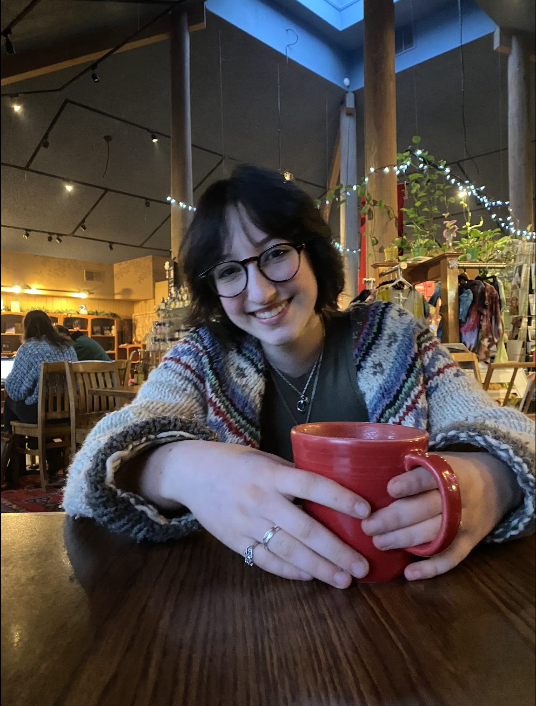

|  | Sarah Ruana Advanced Programming Topics Period 1 June 9th, 2024 |
|---|
The Ruana Archive
This web page is designed to showcase my family's extensive archival pieces so that my family heirlooms don't get lost to time. The user will be able to choose both a person and a type of artifact from various drop down menus. This will then populate items that match that query below the drop down menus. If a user chooses a query that is not available, a message will appear in the same place. For each artifact there is a short description and date attached that can be seen by the reader. This project is unique because it is essentially a digital archive similar to a museum, however, it is interactive drawing people together with stories of the past.
Tech Stack:
Chrome - this is the interpreter and is where the website is shown
VSCode - this is the IDE for my project
Google Drives - Version control for old copies of my coding files
MySQL - database to store the artifacts and people in their connected
tables
SpringBoot - the server whose architecture provided a framework for
my api